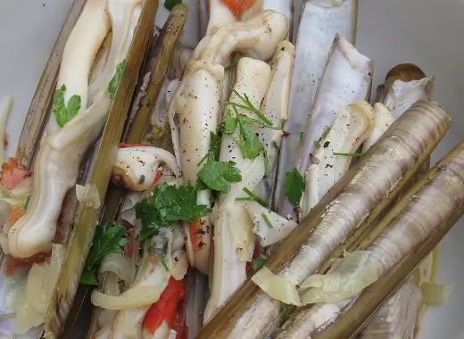

Starters & snacks
Pan-fried razor clams
Pan-fried razor clams is made with wild razor clams.

How do you make pan-fried razor clams?
Razor clams seared with garlic, chilli and parsley.
Wild ingredients
- Razor clams (Ensis spp.): in season October to April
Watch the recipe

Video: Scott Rea on YouTube